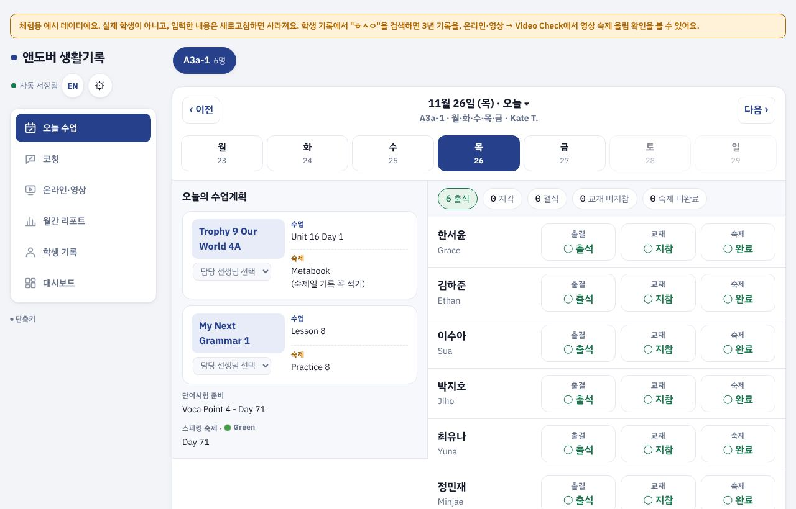
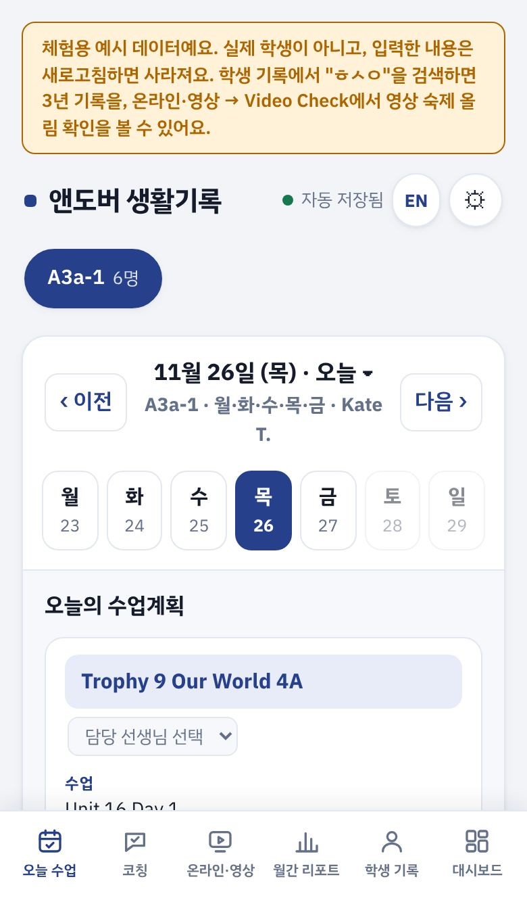
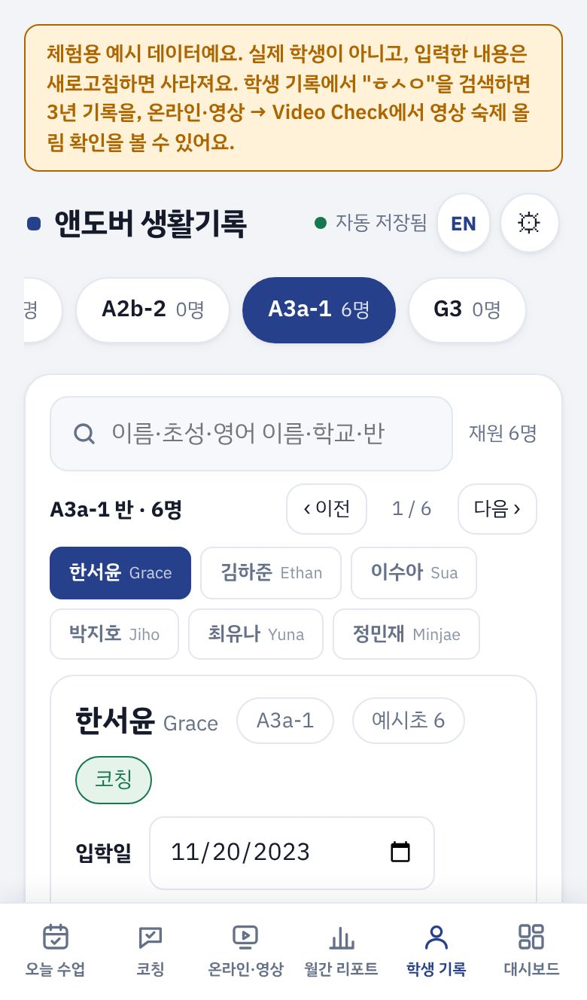

앤도버 생활기록 사용 가이드
출결, 수업 기록, 단어시험, 코칭, 온라인·영상 숙제, 월간 평가를 한 프로그램에서 입력합니다. 처음 쓰시는 날 위에서부터 한 번 읽어 보시고, 이후에는 필요한 화면만 찾아보세요.
처음 접속하기
http://192.168.0.15:8080
열기
- 휴대폰이나 PC를 학원 와이파이에 연결합니다. 모바일 데이터나 집 와이파이에서는 열리지 않아요.
- 위 주소를 열면 바로 시작 화면이 나옵니다. 비밀번호는 없어요.
- 휴대폰은 사파리(크롬) 공유 → 홈 화면에 추가를 해 두면 다음부터 앱처럼 열립니다.
- 오른쪽 위 ⚙ 설정 → 반 관리 맨 위 "이 기기에서 나는 누구?"에서 내 이름을 골라 주세요. 내 반이 맨 앞에 오고, 내가 저장한 기록에 이름이 남아요. (기기마다 한 번)
- 원어민 선생님은 오른쪽 위 EN을 누르면 영어 화면이 됩니다. 다시 누르면 한글로 돌아와요.
입력하는 즉시 자동 저장됩니다. 저장 버튼을 따로 누를 필요가 없고, 다른 선생님 입력도 몇 초 안에 내 화면에 보여요.
기본 사용법
| 무엇 | 어디에 · 어떻게 |
|---|---|
| 메인 메뉴 6개 | PC는 왼쪽, 휴대폰은 화면 아래: 오늘 수업 · 코칭 · 온라인·영상 · 월간 리포트 · 학생 기록 · 대시보드 |
| 반 고르기 | 화면 위쪽 반 버튼. 오늘 수업이 있는 반만 보여요. |
| 날짜 바꾸기 | 날짜 옆 ‹ 이전 / 다음 ›, 요일 줄을 누르거나 날짜를 눌러 달력에서 고르기 |
| 저장 상태 | 왼쪽 위 초록 점 "자동 저장됨". 주황색 "저장 중"이 오래 가면 와이파이를 확인하세요. |
| 지우기 버튼 | 실수 방지를 위해 두 번 눌러야 지워져요. 한 번 누르면 "한 번 더 누르면 삭제"로 바뀝니다. |
| 가이드 | 오른쪽 위 ? 버튼 |
| PC 단축키 | ← → 날짜 이동 · T 오늘 · 1~6 메뉴 이동 · / 학생 찾기 |
하루 순서
오늘 수업에서 내 반을 누르고 수업계획을 확인합니다. 계획 카드에서 담당 선생님을 골라 두세요.
출결 → 교재 → 숙제 순서로 다른 학생만 누릅니다. 단어시험을 봤으면 맨 아래에 점수를 넣어요.
코칭에서 못 한 숙제만 누르고 메시지를 보냅니다. 온라인·영상에서 온라인 숙제와 영상 숙제 올림을 체크합니다.
대시보드 → 입력률에서 내 반에 빠진 날이 없는지 확인합니다.
오늘 수업

1. 수업계획 확인
- 반을 누르면 그날 수업계획(교재 · Unit · Day · 숙제)이 카드로 나옵니다. 매달 올린 Lesson plan 엑셀에서 자동으로 들어와요.
- 계획이 비어 있으면 그 달 Lesson plan이 아직 안 올라간 거예요. Annie께 알려 주세요.
2. 학생별 출결 · 교재 · 숙제
- 처음엔 모든 학생이 출석 · 지참 · 완료 상태예요. 다른 학생만 누르면 됩니다.
- 출결: 누를 때마다 출석 → 지각 → 결석 → 출석. 지각·결석이면 사유 칸이 생겨요.
- 교재: 누르면 미지참. 교재가 여러 권인 날은 어느 교재를 안 가져왔는지 고를 수 있어요.
- 숙제: 누를 때마다 완료 → 미흡 → 안 함. 미흡이면 어느 숙제인지 고르고, 메모 칸에 이유를 적어요.
- 결석한 학생은 교재·숙제가 자동으로 빠져요.
3. 저장하고 다음 반으로
- 아무도 다르지 않으면 전원 정상으로 저장하고 다음 수업 ›을 누르세요. 한 번에 저장되고 다음 반으로 넘어가요.
- 한 명이라도 누르면 그 순간 저장돼요. 다 끝나면 다음 수업 ›.
- 잘못 만든 날 기록은 이 날 기록 지우기(두 번 누르기)로 지웁니다.
단어시험 넣기 오늘 수업 맨 아래
- 오늘 본 시험 종류 버튼을 누릅니다. 예: + 교재 단어, + Dictation. 반 레벨에 맞는 종류만 보여요.
- 만점을 먼저 넣으세요. 개수가 매일 달라서 시험마다 넣어요. 단어 리스트와 시험 범위는 적어 두면 월간 리포트에 함께 나와요.
- 학생마다 점수를 넣어요. 만점이면 🏆가 붙고, 70% 미만이면 빨간 숫자로 바뀌어요.
- 시험을 안 본 학생은 결시를 누릅니다.
- 재시험을 보면 옆 재시험 칸에 점수를 넣어요. 아래 요약에 "재시험 2 ○○○ ✓"처럼 재시험 대상과 끝낸 학생이 보여요.
- 같은 날 두 번째 시험이 있으면 다른 종류 버튼을 하나 더 눌러요. 위쪽 탭으로 오가며 넣을 수 있어요.
평균과 그래프에는 첫 점수만 들어가요. 재시험 점수는 기록으로만 남아요.
코칭

오늘 코칭
- 코칭반 학생의 오늘 숙제 항목이 수업계획에서 자동으로 만들어집니다.
- Metabook은 교재 · Unit · Day까지 붙어요.
- Video 숙제가 있는 날은 "📹 Video 숙제 가정 제출"이 들어가요.
- SPC 인증 Day에는 "🎤 SPC 인증 영상"이 들어가요.
- 왼쪽에서 학생을 고르고, 처음엔 모두 ✅ 완료예요. 못 한 것만 눌러 바꿔요. (PC는 ↑ ↓로 학생 이동)
- 아래 보낼 메시지가 자동으로 만들어져요. 필요하면 고친 뒤 복사해서 보냅니다.
- 다 했으면 이 반 코칭 기록 저장을 누릅니다.
코칭결과
- 날짜별·달별로 학생마다 몇 개 완료했는지 모아서 봅니다.
온라인·영상

온라인 숙제
- 반과 날짜를 고르면 그 반이 쓰는 사이트(예: Trophy 9)와 활동 항목이 나와요.
- Trophy 9는 그날 수업계획의 Day 번호에 맞는 레슨 항목으로 자동으로 바뀌어요. 다르면 레슨 버튼으로 바꿀 수 있어요.
- 학생마다 한 항목을 눌러 완료를 체크합니다. 그날 온라인 숙제가 없으면 "이 날 온라인학습 안 함"을 누르세요.
Video Check
- 밴드에 영상 숙제를 올린 학생을 누르면 올린 날짜가 함께 기록돼요. 날짜 칸에서 올린 날을 바꿀 수 있어요.
- 안 올린 학생은 개인 메시지를 복사해서 보내요. 문구는 설정에서 바꿀 수 있어요.
- 영상을 보고 평가 항목별 점수와 피드백을 남기면 월간 평가의 Speaking에도 쓰여요.
월간 리포트
| 탭 | 하는 일 |
|---|---|
| 반별 월간표 | 한 달을 표로 봐요. 위에서 출결 · 교재 · 숙제 · 단어시험 · 코칭 중 하나를 골라요. 칸 옆 • 는 사유·메모가 있다는 뜻이에요. |
| 월간 평가 | 매달 교재별 1~4점 평가와 코멘트. 아래에 자세히 |
| 단어점수 | 반마다, 시험 종류마다 표가 나뉘어요. 재시험은 ↻ 17처럼 붙어요. 날짜 아래에 만점 칸이 비어 있으면 숫자를 넣어 주세요. 그래야 평균 %와 그래프에 들어가요. 이 달 / 전체 기간으로 범위를 바꿔요. |
| Voca King | 달마다 Voca King 점수를 넣고 봐요. 만점자는 🏆로 모아 보여요. |
| 정기평가 | 4월·10월 정기평가 점수와 인터뷰 결과를 넣고 봐요. |
| 엑셀 내려받기 | 반별 월간표, 단어점수, Voca King, 정기평가, 코멘트를 엑셀로 받아요. 엑셀은 이 탭 한 곳에 모여 있어요. |
월간 평가 매달 말

- 맨 위에서 내 역할을 고릅니다. 한국인 선생님 · 한글 또는 원어민 선생님 · English. 한 번 고르면 기기에 기억돼요.
- 반과 달을 고릅니다. 평가 교재에는 그달 수업계획에 나온 교재가 자동으로 들어와요.
- 한국인 선생님: Reading(Trophy 9 포함) · Grammar → 한글 코멘트
- 원어민 선생님: Reading · Writing · Speaking → 영어 코멘트
- 흐린 교재는 다른 선생님 담당이에요. 빼려면 ×, 더하려면 + 교재 추가.
- 학생마다 영역별로 4 우수 · 3 양호 · 2 노력 필요 · 1 지원 필요를 누릅니다. 교재 오른쪽 모두 4 / 모두 3으로 한 번에 넣을 수 있어요.
- 점수를 누르는 즉시 아래에 코멘트가 자동으로 써져요. 문장은 직접 고쳐도 돼요.
- 특이사항은 매달 적을 수 있어요. 선생님 관찰 · 다음 목표 칸은 정기평가 달(4월·10월)에만 나와요.
- 마지막에 빈 칸 모두 3점으로(두 번 누르기)를 쓰면 빠진 칸을 채울 수 있어요.
- 반 전체 PDF를 누르면 반 학생 모두의 월간 리포트가 한 장씩 이어진 PDF로 나와요. 4월·10월에는 반 전체 학기 성적표도 있어요.
- 점수를 누를 때마다 학생 기록에 자동 저장돼요. 다 끝나면 반 전체 저장을 한 번 눌러 마무리해요. 학생마다 "학생 기록에 저장됨 · 시간"이 보여요.
학생 기록

- 찾기: 이름 초성(한서윤 → ㅎㅅㅇ), 이름 일부, 영어 이름, 반 이름 모두 돼요. PC는 / 키로 바로 검색창.
- 숫자 카드: 최근 3개월 출석률 · 숙제 이행률 · 단어시험 평균 · 재원 기간. 기준보다 낮으면 색으로 표시돼요. 입학일을 넣으면 재원 기간이 나와요.
- 월간 요약: ‹ › 로 달을 옮겨요. 출결, 교재·숙제, 코칭, 단어시험(종류별, 재시험 ↻), Voca King, 온라인학습, 정기평가, 스피킹 영상, 월간 코멘트가 한 번에 나와요. 요약 복사로 상담 메모에 붙여요.
- 레벨 · 반 이력: 언제 어떤 레벨·반이었는지, 그때 쓴 교재와 출석·숙제·단어 성적이 나와요.
- 학습 흐름: 숙제 이행률과 단어시험 평균 그래프. 시험 종류가 둘 이상이면 종류별 색깔 선으로 나뉘어요. 만점이 있는 기록이 두 달 이상 쌓여야 그려져요.
- 이력: 입학, 반 이동, 대회, 정기평가가 날짜순으로 모여요. 이력·대회 추가로 대회 수상 등을 직접 넣어요.
- 요약 문장 초안: 상담 전에 복사해서 다듬어 쓰면 편해요.
- 📄 학부모 월간 리포트 / 학기 성적표: 월간 요약의 달 옆 버튼을 누르면 프라게 양식 A4 리포트가 열려요. PDF로 저장을 누르고 인쇄 창에서 "PDF로 저장"을 고르면 돼요. 학기 성적표는 가장 가까운 정기평가 달(4월·10월) 기준이에요.
대시보드

- 입력률: 반별로 수업한 날 중 기록이 빠진 날을 보여 줘요. 빠진 날을 누르면 그날 오늘 수업 화면으로 바로 가요.
- 주의 학생: 최근 3주 동안 결석·지각, 숙제 미흡, 단어시험 하락, 온라인학습 연속 미완료가 있는 학생이 이유와 함께 모여요. 이름을 누르면 학생 기록으로 가요.
휴대폰에서는


메뉴가 화면 아래쪽에 있어요. 기능은 PC와 똑같습니다. 표가 화면보다 넓으면 옆으로 밀어서 봐요.
설정 (⚙) Annie · 담당 선생님
| 메뉴 | 하는 일 | 언제 |
|---|---|---|
| 반 관리 | 반 이름·요일·시간·담당 선생님·레벨, 이 반이 쓰는 온라인 사이트, SPC 레벨. 맨 위 "이 기기에서 나는 누구?" | 반이 생기거나 바뀔 때 |
| 학생 관리 | 학생 추가, 영어 이름·학교, 코칭 여부, 퇴원 처리(기록은 남아요) | 입학·퇴원 때 |
| 반 편성 | 학기 전 반 이동을 표에서 한꺼번에 정하고 적용. 적용 전에 자동 백업 | 학기 시작 전 |
| 엑셀 올리기 | 매달 Student list와 Lesson plan 엑셀 올리기 | 매달 초 |
| 휴강·보강 | 방학·휴강일과 보강일 등록 | 일정이 바뀔 때 |
| 온라인 학습 관리 | 사이트 추가, 기본 요일과 활동 항목, Trophy 9 레슨별 항목 | 처음 한 번 |
| 단어시험 종류 | 시험 종류 이름과 적용 레벨, 재시험 기준(기본 70% 미만) | 처음 한 번 |
| Video Check 관리 | 영상 숙제 평가 항목·문장, 미제출 개인 메시지 문구, SPC 인증 간격 | 처음 한 번 |
| 평가 루브릭 | 월간 평가 교재별 문장 보기·고치기, 정기평가 달(4·10월) | 교재가 바뀔 때 |
| 정기평가 설정 | 정기평가 회차·시험 종류, 점수 엑셀 가져오기 | 4월·10월 |
주간·월간 할 일
| 언제 | 할 일 | 어디서 |
|---|---|---|
| 매주 | 단어시험 점수와 빈 만점 칸 확인 | 월간 리포트 → 단어점수 |
| 매달 초 | Student list · Lesson plan 엑셀 올리기 (Annie) | 설정 → 엑셀 올리기 |
| 매달 Voca King 후 | Voca King 점수 입력 | 월간 리포트 → Voca King |
| 매달 말 | 월간 평가 점수 + 특이사항 입력 | 월간 리포트 → 월간 평가 |
| 4월 · 10월 | 정기평가 점수, 관찰 · 다음 목표 입력 | 월간 리포트 → 정기평가 · 월간 평가 |
| 필요할 때 | 엑셀로 받기 | 월간 리포트 → 엑셀 내려받기 |
이럴 땐 이렇게
| 증상 | 해결 |
|---|---|
| 주소가 안 열려요 | 학원 와이파이에 연결됐는지 확인하세요. 그래도 안 되면 학원 컴퓨터가 켜져 있고 검은 창이 떠 있는지 Annie께 여쭤 주세요. |
| 오늘 반이 안 보여요 | 날짜가 오늘인지 확인하세요(T 키 또는 날짜 → 오늘). 요일이 다르면 설정 → 반 관리에서 수업 요일을 확인해요. |
| 수업계획이 비어 있어요 | 그 달 Lesson plan 엑셀이 아직 안 올라간 경우예요. Annie께 알려 주세요. |
| 단어시험 종류 버튼이 없어요 | 설정 → 단어시험 종류에서 이 반 레벨이 적용 레벨에 들어 있는지 확인해요. |
| 그래프가 안 보여요 | 만점이 적힌 기록이 두 달 이상 있어야 해요. 단어점수 표에서 빈 만점 칸을 채워 주세요. |
| 다른 선생님 입력이 안 보여요 | 몇 초 기다리거나 화면을 새로고침하세요. |
| "저장 중"이 계속 떠요 | 와이파이가 끊긴 상태예요. 다시 연결되면 자동으로 저장돼요. 화면을 닫지 말고 기다려 주세요. |
| 잘못 입력했어요 | 다시 고치면 덮어써집니다. 지운 기록은 Annie가 백업에서 되살릴 수 있어요. |
꼭 지켜 주세요
- 학원 컴퓨터의 검은 창(프로그램)을 끄지 마세요. 끄면 모두 접속이 끊깁니다.
- 학생 기록 화면을 학원 밖 사람에게 보여 주거나 캡처해 보내지 마세요.
- 설정(⚙) 메뉴는 Annie와 담당 선생님만 바꿔 주세요.
- 같은 반 같은 날을 두 사람이 동시에 고치면 나중에 저장한 쪽이 남아요. 담당을 나눠 주세요.
Annie 전용 · 학원 컴퓨터 관리
켜기
바탕화면 andover-record 폴더의 start-windows.bat를 더블클릭하면 검은 창이 뜨고 프로그램이 켜져요. 검은 창에 선생님들이 접속할 주소가 나와요.
관리자 화면
학원 컴퓨터에서 http://localhost:8080/admin. 현재 데이터 개수, 백업, 프로그램 업데이트, 지난 성적 추가하기가 있어요.
백업과 되돌리기
매일 자동 백업이 만들어지고 30일치를 보관해요. 큰 작업 전에는 지금 백업을 눌러 두세요. 되돌릴 때는 백업 목록에서 날짜를 골라 복원합니다.
프로그램 업데이트
새 업데이트 ZIP을 프로그램 업데이트에 올리고 검은 창을 닫았다가 다시 켜요. 학생 데이터(data 폴더)는 건드리지 않아요. data 폴더는 절대 지우거나 덮어쓰지 마세요.
컴퓨터 설정
화면보호기는 괜찮지만 절전(잠자기)은 꺼 두세요. 잠자기에 들어가면 접속이 끊겨요.
밖에서 보기 (선택)
Tailscale을 학원 컴퓨터와 Annie 휴대폰에 같은 계정으로 설치하면 학원 밖에서도 http://100.x.x.x:8080으로 볼 수 있어요.